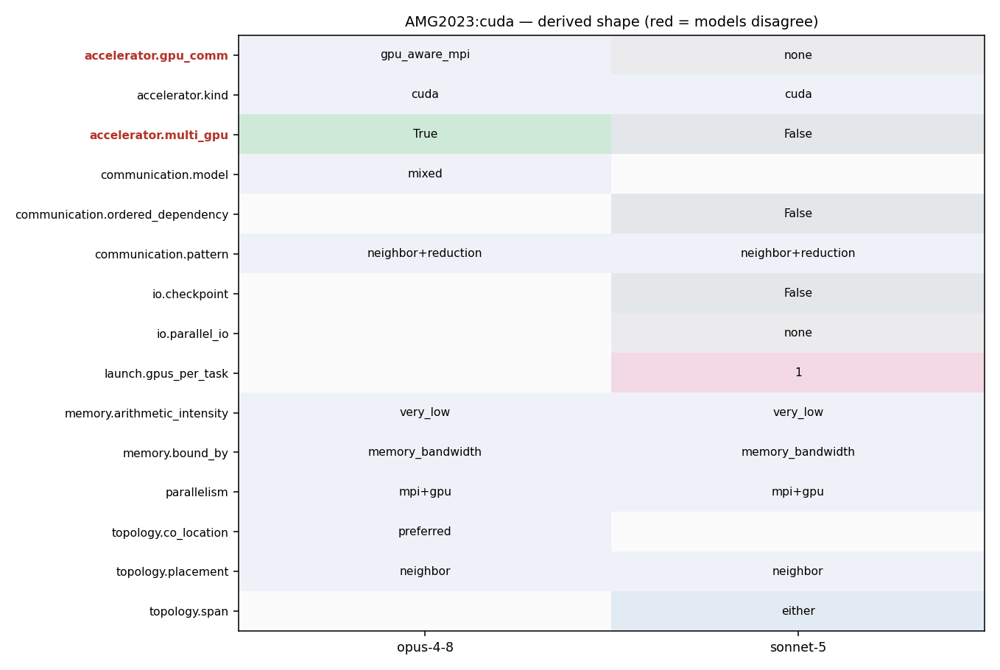

mpirun -np <ngpus> ./amg -problem 1 -n <nx> <ny> <nz> -P <px> <py> <pz> -exec_device -memory_device
mpirun -np <P*Q*R> --gpus-per-task 1 ./amg -P <px> <py> <pz>
357 * GPU Device binding 358 * Must be done before HYPRE_Init() and should not be changed after 359 *-----------------------------------------------------------------*/ 360 hypre_bind_device(myid, num_procs, comm); 361 #ifdef USE_CALIPER 362 CALI_MARK_BEGIN("Hypre init"); 363 #endif
47 list(APPEND AMG_DEPENDENCIES 48 ${HYPRE_LIBRARIES}) 49 50 if (AMG_WITH_CUDA) 51 find_package(CUDAToolkit REQUIRED) 52 list(APPEND AMG_DEPENDENCIES 53 CUDA::cudart 54 CUDA::cusolver 55 CUDA::cublas 56 CUDA::cusparse 57 CUDA::curand) 58 endif() 59 60 if (AMG_WITH_HIP)
141 142 #if defined(HYPRE_USING_GPU) 143 HYPRE_Int spmv_use_vendor = 1; 144 #if defined(HYPRE_USING_CUDA) 145 HYPRE_Int spgemm_use_vendor = 0; 146 #else 147 HYPRE_Int spgemm_use_vendor = 1;
357 * GPU Device binding 358 * Must be done before HYPRE_Init() and should not be changed after 359 *-----------------------------------------------------------------*/ 360 hypre_bind_device(myid, num_procs, comm); 361 #ifdef USE_CALIPER 362 CALI_MARK_BEGIN("Hypre init"); 363 #endif
368 * Initialize : must be the first HYPRE function to call 369 *-----------------------------------------------------------*/ 370 HYPRE_Init(); 371 #if defined(HYPRE_USING_GPU) || defined(HYPRE_USING_DEVICE_OPENMP) 372 HYPRE_DeviceInitialize(); 373 HYPRE_PrintDeviceInfo(); 374 #endif 375 376 hypre_EndTiming(time_index); 377 hypre_GetTiming("Hypre init times", &wall_time, comm);
19 set(CMAKE_INSTALL_RPATH_USE_LINK_PATH TRUE) 20 21 option(AMG_WITH_MPI "Use MPI" TRUE) 22 option(AMG_WITH_CUDA "Use CUDA" FALSE) 23 option(AMG_WITH_HIP "Use HIP" FALSE) 24 option(AMG_WITH_CALIPER "Enable Caliper" FALSE) 25 option(AMG_WITH_OMP "Enable OpenMP" FALSE) 26 option(AMG_WITH_UMPIRE "Enable Umpire support (requires Umpire support in HYPRE)" FALSE) 27 28 find_library(HYPRE_LIBRARIES 29 NAMES HYPRE 30 HINTS ${HYPRE_PREFIX}/lib) 31 find_path(HYPRE_INCLUDE_DIR 32 NAMES HYPRE.h 33 HINTS ${HYPRE_PREFIX}/include) 34 35 include(FindPackageHandleStandardArgs) 36 find_package_handle_standard_args(HYPRE DEFAULT_MSG 37 HYPRE_LIBRARIES 38 HYPRE_INCLUDE_DIR) 39 40 if (NOT HYPRE_FOUND) 41 message(FATAL_ERROR "Hypre not found") 42 endif()
357 * GPU Device binding 358 * Must be done before HYPRE_Init() and should not be changed after 359 *-----------------------------------------------------------------*/ 360 hypre_bind_device(myid, num_procs, comm); 361 #ifdef USE_CALIPER 362 CALI_MARK_BEGIN("Hypre init"); 363 #endif
151 HYPRE_Int dev_pool_size = 4, um_pool_size = 4; 152 153 /* default execution policy and memory space */ 154 HYPRE_MemoryLocation memory_location = HYPRE_MEMORY_DEVICE; 155 HYPRE_ExecutionPolicy default_exec_policy = HYPRE_EXEC_DEVICE; 156 157 for (arg_index = 1; arg_index < argc; arg_index ++)
543 CALI_MARK_BEGIN("Problem"); 544 #endif 545 time_index = hypre_InitializeTiming("PCG Setup"); 546 hypre_MPI_Barrier(comm); 547 #ifdef USE_CALIPER 548 CALI_MARK_BEGIN("Setup"); 549 #endif 550 hypre_BeginTiming(time_index); 551 HYPRE_ParCSRPCGCreate(comm, &pcg_solver); 552 HYPRE_PCGSetMaxIter(pcg_solver, max_iter); 553 HYPRE_PCGSetTol(pcg_solver, tol); 554 HYPRE_PCGSetTwoNorm(pcg_solver, 1); 555 HYPRE_PCGSetRelChange(pcg_solver, rel_change); 556 HYPRE_PCGSetPrintLevel(pcg_solver, ioutdat); 557 HYPRE_PCGSetAbsoluteTol(pcg_solver, atol); 558 HYPRE_PCGSetRecomputeResidual(pcg_solver, 1); 559 560 /* use BoomerAMG as preconditioner */ 561 if (myid == 0 && print_stats) { hypre_printf("Solver: AMG-PCG\n"); } 562 HYPRE_BoomerAMGCreate(&pcg_precond); 563 HYPRE_BoomerAMGSetTol(pcg_precond, pc_tol); 564 /*HYPRE_BoomerAMGSetCoarsenType(pcg_precond, coarsen_type);*/ 565 HYPRE_BoomerAMGSetInterpType(pcg_precond, interp_type); 566 HYPRE_BoomerAMGSetPMaxElmts(pcg_precond, P_max_elmts);
548 CALI_MARK_BEGIN("Setup"); 549 #endif 550 hypre_BeginTiming(time_index); 551 HYPRE_ParCSRPCGCreate(comm, &pcg_solver); 552 HYPRE_PCGSetMaxIter(pcg_solver, max_iter); 553 HYPRE_PCGSetTol(pcg_solver, tol); 554 HYPRE_PCGSetTwoNorm(pcg_solver, 1);
449 450 if (problem_id == 1) 451 { 452 BuildIJLaplacian27pt(argc, argv, &system_size, &ij_A, memory_location); 453 } 454 else 455 {
8 hypre-2.27.0 or higher. 9 10 AMG2023 is written in C. It is a SPMD code which uses MPI and OpenMP threading within MPI tasks. 11 Parallelism is achieved by data decomposition, which is here achieved by simply subdividing 12 the grid into logical P x Q x R (in 3D) chunks of equal size. 13 It can also be used on NVIDIA, AMD, and Intel GPUs via CUDA, HIP, and SYCL. 14 15 AMG2023 is distributed under the terms of both the MIT license and the Apache License (Version 2.0).
595 HYPRE_PCGSetup(pcg_solver, (HYPRE_Matrix)parcsr_A, 596 (HYPRE_Vector)b, (HYPRE_Vector)x); 597 598 hypre_MPI_Barrier(comm); 599 hypre_EndTiming(time_index); 600 #ifdef USE_CALIPER 601 CALI_MARK_END("Setup"); 602 #endif 603 hypre_GetTiming("Problem 2: AMG Setup Time", &wall_time, comm); 604 hypre_FinalizeTiming(time_index); 605 hypre_ClearTiming(); 606 fflush(NULL); 607 608 HYPRE_BoomerAMGGetCumNnzAP(pcg_precond, &cum_nnz_AP); 609 610 FOM1 = cum_nnz_AP / wall_time; 611 total_time = wall_time; 612 613 #ifdef USE_CALIPER 614 adiak_namevalue("Setup-FOM", adiak_general, NULL, "%f", FOM1); 615 #endif 616 617 if (myid == 0) 618 {
449 450 if (problem_id == 1) 451 { 452 BuildIJLaplacian27pt(argc, argv, &system_size, &ij_A, memory_location); 453 } 454 else 455 {
2 3 # General description: 4 5 AMG2023 is a parallel algebraic multigrid solver for linear systems arising from 6 problems on unstructured grids. The driver provided here builds linear 7 systems for various 3-dimensional problems. It requires an installation of 8 hypre-2.27.0 or higher. 9 10 AMG2023 is written in C. It is a SPMD code which uses MPI and OpenMP threading within MPI tasks. 11 Parallelism is achieved by data decomposition, which is here achieved by simply subdividing 12 the grid into logical P x Q x R (in 3D) chunks of equal size. 13 It can also be used on NVIDIA, AMD, and Intel GPUs via CUDA, HIP, and SYCL. 14 15 AMG2023 is distributed under the terms of both the MIT license and the Apache License (Version 2.0).
2 3 # General description: 4 5 AMG2023 is a parallel algebraic multigrid solver for linear systems arising from 6 problems on unstructured grids. The driver provided here builds linear 7 systems for various 3-dimensional problems. It requires an installation of 8 hypre-2.27.0 or higher.
383 /*----------------------------------------------------------------- 384 * UMPIRE Pools 385 *-----------------------------------------------------------------*/ 386 #if defined(HYPRE_USING_UMPIRE) 387 char device_pool_name[] = "AMG_DEVICE_POOL"; 388 char um_pool_name[] = "AMG_UM_POOL"; 389 size_t umpire_dev_pool_size = ((size_t) dev_pool_size) * 1024 * 1024 * 1024; 390 size_t umpire_um_pool_size = ((size_t) um_pool_size) * 1024 * 1024 * 1024; 391 size_t umpire_dev_block_size = 512; 392 size_t umpire_um_block_size = 512; 393 umpire_resourcemanager umpire_rm; 394 umpire_resourcemanager_get_instance(&umpire_rm); 395 umpire_allocator um_allocator, dev_allocator; 396 /* create device pool */ 397 { 398 hypre_int device_id; 399 hypre_GetDevice(&device_id); 400 char resource_name[16]; 401 hypre_sprintf(resource_name, "%s::%d", "DEVICE", device_id); 402 umpire_allocator allocator; 403 umpire_resourcemanager_get_allocator_by_name(&umpire_rm, resource_name, &allocator); 404 hypre_umpire_resourcemanager_make_allocator_pool(&umpire_rm, device_pool_name, allocator, 405 umpire_dev_pool_size, umpire_dev_block_size, 406 &dev_allocator);
10 AMG2023 is written in C. It is a SPMD code which uses MPI and OpenMP threading within MPI tasks. 11 Parallelism is achieved by data decomposition, which is here achieved by simply subdividing 12 the grid into logical P x Q x R (in 3D) chunks of equal size. 13 It can also be used on NVIDIA, AMD, and Intel GPUs via CUDA, HIP, and SYCL. 14 15 AMG2023 is distributed under the terms of both the MIT license and the Apache License (Version 2.0). 16
19 set(CMAKE_INSTALL_RPATH_USE_LINK_PATH TRUE) 20 21 option(AMG_WITH_MPI "Use MPI" TRUE) 22 option(AMG_WITH_CUDA "Use CUDA" FALSE) 23 option(AMG_WITH_HIP "Use HIP" FALSE) 24 option(AMG_WITH_CALIPER "Enable Caliper" FALSE) 25 option(AMG_WITH_OMP "Enable OpenMP" FALSE)
47 list(APPEND AMG_DEPENDENCIES 48 ${HYPRE_LIBRARIES}) 49 50 if (AMG_WITH_CUDA) 51 find_package(CUDAToolkit REQUIRED) 52 list(APPEND AMG_DEPENDENCIES 53 CUDA::cudart 54 CUDA::cusolver 55 CUDA::cublas 56 CUDA::cusparse 57 CUDA::curand) 58 endif() 59 60 if (AMG_WITH_HIP)
139 HYPRE_Int rel_change = 0; 140 hypre_Vector *values; 141 142 #if defined(HYPRE_USING_GPU) 143 HYPRE_Int spmv_use_vendor = 1; 144 #if defined(HYPRE_USING_CUDA) 145 HYPRE_Int spgemm_use_vendor = 0; 146 #else 147 HYPRE_Int spgemm_use_vendor = 1; 148 #endif 149 #endif 150 151 HYPRE_Int dev_pool_size = 4, um_pool_size = 4; 152
44 ######################################################################## 45 # CUDA options - set correct paths depending on cuda package 46 ######################################################################## 47 HYPRE_CUDA_PATH = /usr/tce/packages/cuda/cuda-10.1.243 48 HYPRE_CUDA_INCLUDE = -I${HYPRE_CUDA_PATH}/include 49 HYPRE_CUDA_LIBS = -L${HYPRE_CUDA_PATH}/lib64 -lcudart -lcusparse -lcublas -lcurand 50 51 ######################################################################## 52 # HIP options set correct path depending on rocm version
47 list(APPEND AMG_DEPENDENCIES 48 ${HYPRE_LIBRARIES}) 49 50 if (AMG_WITH_CUDA) 51 find_package(CUDAToolkit REQUIRED) 52 list(APPEND AMG_DEPENDENCIES 53 CUDA::cudart 54 CUDA::cusolver 55 CUDA::cublas 56 CUDA::cusparse 57 CUDA::curand) 58 endif() 59 60 if (AMG_WITH_HIP) 61 find_package(hip REQUIRED)
357 * GPU Device binding 358 * Must be done before HYPRE_Init() and should not be changed after 359 *-----------------------------------------------------------------*/ 360 hypre_bind_device(myid, num_procs, comm); 361 #ifdef USE_CALIPER 362 CALI_MARK_BEGIN("Hypre init"); 363 #endif
548 CALI_MARK_BEGIN("Setup"); 549 #endif 550 hypre_BeginTiming(time_index); 551 HYPRE_ParCSRPCGCreate(comm, &pcg_solver); 552 HYPRE_PCGSetMaxIter(pcg_solver, max_iter); 553 HYPRE_PCGSetTol(pcg_solver, tol); 554 HYPRE_PCGSetTwoNorm(pcg_solver, 1);
449 450 if (problem_id == 1) 451 { 452 BuildIJLaplacian27pt(argc, argv, &system_size, &ij_A, memory_location); 453 } 454 else 455 {
8 hypre-2.27.0 or higher. 9 10 AMG2023 is written in C. It is a SPMD code which uses MPI and OpenMP threading within MPI tasks. 11 Parallelism is achieved by data decomposition, which is here achieved by simply subdividing 12 the grid into logical P x Q x R (in 3D) chunks of equal size. 13 It can also be used on NVIDIA, AMD, and Intel GPUs via CUDA, HIP, and SYCL. 14 15 AMG2023 is distributed under the terms of both the MIT license and the Apache License (Version 2.0).
7 systems for various 3-dimensional problems. It requires an installation of 8 hypre-2.27.0 or higher. 9 10 AMG2023 is written in C. It is a SPMD code which uses MPI and OpenMP threading within MPI tasks. 11 Parallelism is achieved by data decomposition, which is here achieved by simply subdividing 12 the grid into logical P x Q x R (in 3D) chunks of equal size. 13 It can also be used on NVIDIA, AMD, and Intel GPUs via CUDA, HIP, and SYCL. 14 15 AMG2023 is distributed under the terms of both the MIT license and the Apache License (Version 2.0). 16